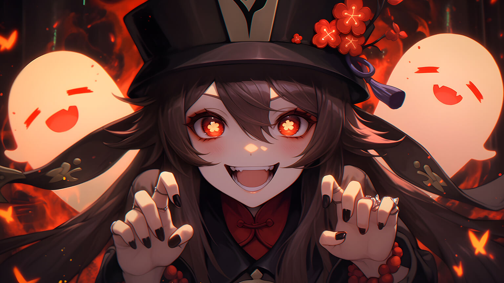

Hello, I'm Hun Tao, a playable Pyro character in Genshin Impact.
Hu Tao appears to be a quirky and cheerful girl. She enjoys pranking people and despises sitting around and doing nothing. She wishes to live her life to the fullest. Her eccentric and off-the-wall personality often leaves people with a negative impression of her, especially Qiqi, who states that she has a "punchable face" and should be stored in the fridge. In contrast, Xiao enjoys her sense of humor, finding it irritating but interesting. On the other hand, when handling funerals and last rites, she becomes more solemn and constantly reminds her employees to never deviate from the client's requests. Due to the importance and traditions of the parlor's duties, she expresses a distaste towards people treating her or her employees with suspicion whenever they go to work at night. She also loathes those who try to prolong their natural lifespan, such as Baizhu. She also appears to show a lack of interest in her Pyro Vision..Hire me? View LinkedIn View GitHub
